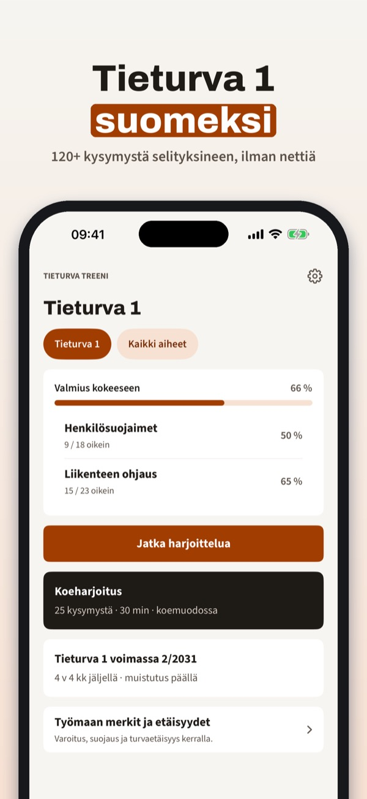
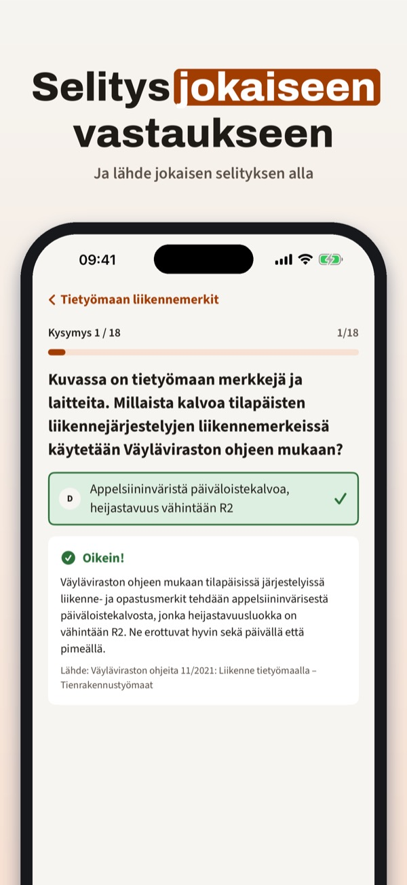
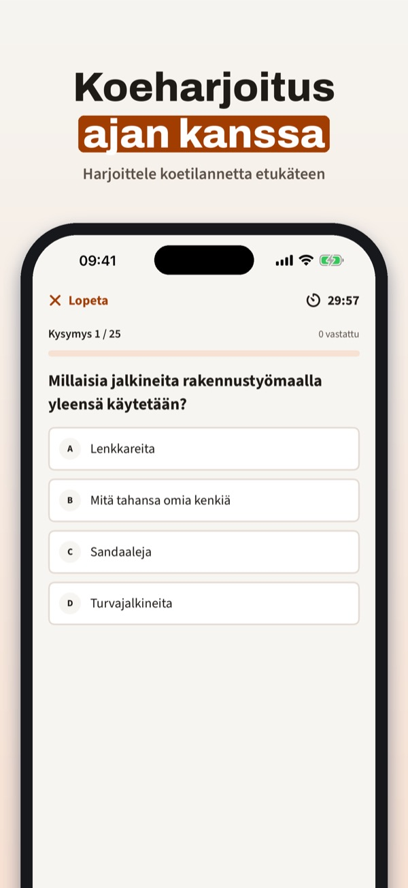
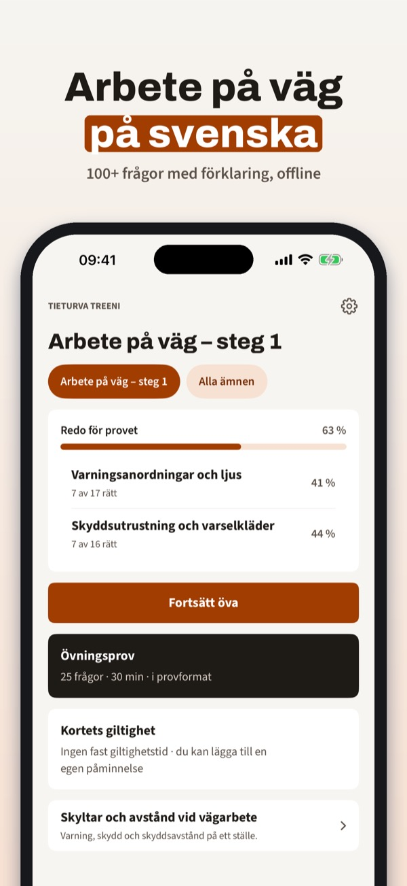
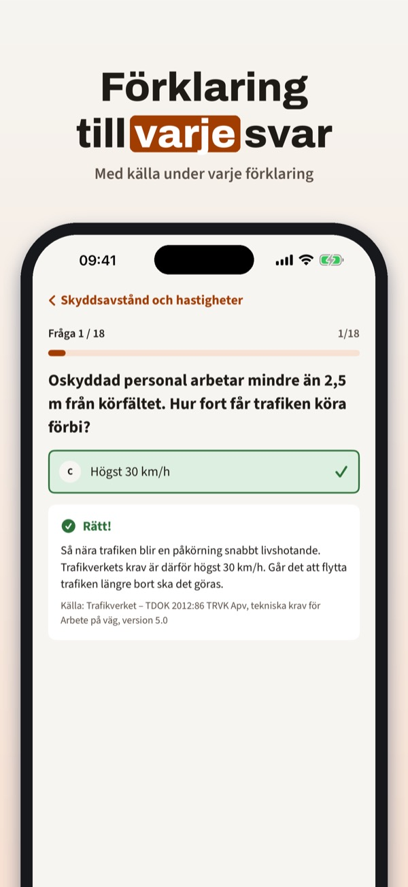
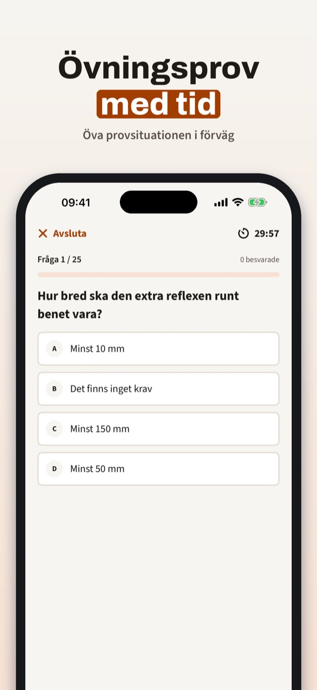
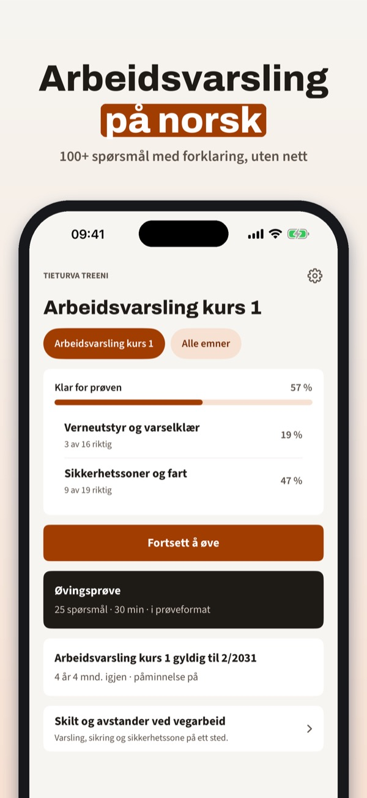
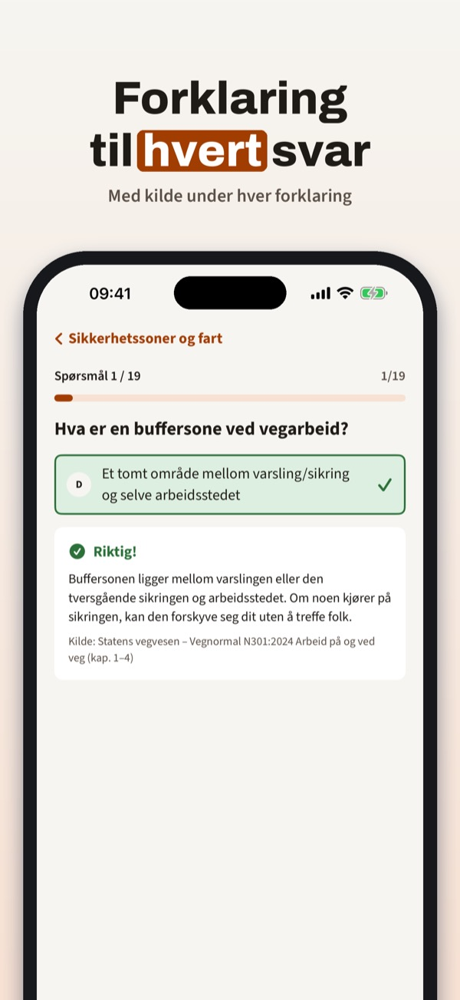
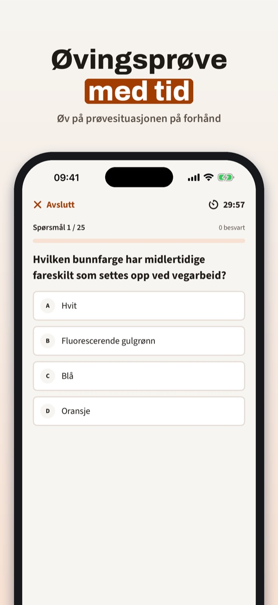

Harjoittele Tieturva 1 -koe
Harjoittele Tieturva 1 -koetta: kysymykset selityksineen, koeharjoitus sekä työmaan merkit ja turvaetäisyydet – suomeksi ja ilman nettiä.



Tieturva Treeni auttaa harjoittelemaan Tieturva 1 -koetta – tietyömaan merkit, varoituslaitteet ja turvaetäisyydet selityksineen.
• Kysymykset aiheittain, selitys jokaiseen vastaukseen
Ilman ostoa voit harjoitella 20 kysymystä ja käyttää sanastoa, merkit ja etäisyydet -sivua sekä kortin muistutusta. Täysi versio on kertaosto, joka avaa kaikki kysymykset, koeharjoitukset ja virheiden kertauksen. Ei tilausta.
Tieturva Treeni on itsenäinen eikä liity Väylävirastoon tai kouluttajiin. Kurssin ja kokeen suoritat kouluttajan kautta.
Terms of Use (EULA): https://www.apple.com/legal/internet-services/itunes/dev/stdeula/
Privacy: https://baytechbv.github.io/privacy/tieturva-nordic/
Övningsfrågor för vägarbete
Öva inför Arbete på väg steg 1: frågor med förklaring, övningsprov och regler för utmärkning och skyddsavstånd – på svenska och offline.



Vägklar hjälper dig att öva inför utbildningen Arbete på väg (APV) steg 1 – vägmärken, varningsanordningar och skyddsavstånd med förklaringar.
• Frågor per ämne med förklaring till varje svar
Utan köp kan du öva 20 frågor och använda ordlistan, sidan om märken och avstånd samt påminnelsen. Fullversionen är ett engångsköp som låser upp alla frågor, övningsprov och repetition av fel. Ingen prenumeration.
Vägklar är fristående och inte kopplad till Trafikverket eller någon utbildare. Utbildningen gör du hos en utbildare.
Terms of Use (EULA): https://www.apple.com/legal/internet-services/itunes/dev/stdeula/
Privacy: https://baytechbv.github.io/privacy/tieturva-nordic/
Teori for arbeidsvarsling
Øv til prøven i arbeidsvarsling kurs 1: spørsmål med forklaring, prøvetester og regler for skilt og sikkerhetssoner – på norsk og uten nett.



Arbeidsvarsling Øv hjelper deg å øve til prøven i arbeidsvarsling kurs 1 – skilt, varslingsutstyr og sikkerhetssoner med forklaringer.
• Spørsmål per emne med forklaring til hvert svar
Uten kjøp kan du øve på 20 spørsmål og bruke ordlisten, siden om skilt og avstander og påminnelsen. Fullversjonen er et engangskjøp som låser opp alle spørsmål, øvingsprøver og repetisjon av feil. Ingen abonnement.
Arbeidsvarsling Øv er uavhengig og ikke tilknyttet Statens vegvesen eller noen kursarrangør. Kurs og prøve tar du hos en kursarrangør.
Terms of Use (EULA): https://www.apple.com/legal/internet-services/itunes/dev/stdeula/
Privacy: https://baytechbv.github.io/privacy/tieturva-nordic/